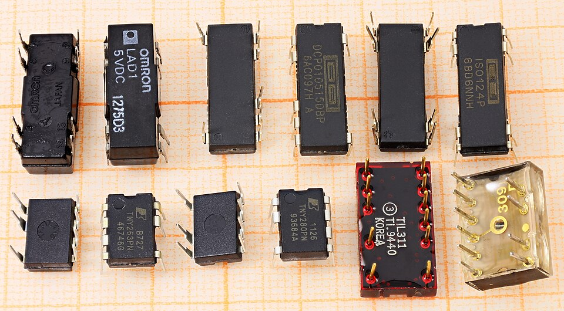

E02 — Electrónica Digital
"El álgebra booleana que estudiaste en papel ES esto, pero hecho de transistores." — la lección más complementaria del campus
Este es el módulo donde informática y electrónica se vuelven literalmente la misma cosa. Las tablas de verdad de M01 son compuertas físicas. El ciclo fetch-decode-execute de M13 son flip-flops sincronizados por un reloj. Acá vas a ver el silicio detrás de la abstracción.
0. La gran revelación
A | B | A AND B
0 | 0 | 0
0 | 1 | 0
1 | 0 | 0
1 | 1 | 11. De voltaje a bit: niveles lógicos
0 (LOW), cerca de Vcc (3.3V o 5V) = lógica 1 (HIGH). Una zona prohibida en el medio se evita.| Nivel lógico | Voltaje (sistema 3.3V) | Significado |
|---|---|---|
0 / LOW | 0V a ~0.8V | Falso, apagado, GND |
| (prohibido) | ~0.8V a ~2V | Indeterminado — se evita |
1 / HIGH | ~2V a 3.3V | Verdadero, encendido, Vcc |
1 en 0 por accidente. Es la misma razón por la que el sistema binario (M01) es la base de TODA la computación: dos estados bien separados son fáciles de distinguir sin error.
2. Las compuertas lógicas
Cada operación booleana de M01 es un componente físico:
| Compuerta | Símbolo booleano | Salida es 1 cuando... | Chip clásico |
|---|---|---|---|
| AND | A · B | ambas entradas son 1 | 74LS08 |
| OR | A + B | al menos una es 1 | 74LS32 |
| NOT (inversor) | ¬A | la entrada es 0 | 74LS04 |
| NAND | ¬(A · B) | NO ambas son 1 | 74LS00 |
| NOR | ¬(A + B) | ninguna es 1 | 74LS02 |
| XOR | A ⊕ B | las entradas son distintas | 74LS86 |

3. De compuertas a aritmética: el sumador
A | B | Suma | Acarreo
0 | 0 | 0 | 0
0 | 1 | 1 | 0
1 | 0 | 1 | 0
1 | 1 | 0 | 1 ← 1+1 = 10 en binario
Suma = A XOR B
Acarreo = A AND Ba + b, dispara exactamente este circuito (×32 o ×64 bits encadenados).
4. Lógica combinacional vs secuencial
5. El flip-flop: memoria de 1 bit
6. El reloj (clock): el latido del sistema
7. Máquinas de estado finito (FSM) en hardware
switch de estados) o en silicio (flip-flops + compuertas).
8. La jerarquía completa: de transistor a programa
Tu programa Python (M06)
↓ se compila/interpreta a...
Instrucciones de máquina (M13, M16)
↓ ejecutadas por la CPU, que es...
Bloques: ALU, registros, control (M13)
↓ construidos con...
Lógica secuencial: FSM + flip-flops (← E02, acá)
↓ construida con...
Lógica combinacional: compuertas (← E02, acá)
↓ construidas con...
Transistores (switches de voltaje)
↓ que son...
Silicio dopado (física de semiconductores)9. Práctica sin comprar nada
- Falstad — armá compuertas y ve la corriente fluir animada.
- NandGame — construí una computadora ENTERA desde una sola compuerta NAND. Imperdible.
- Tinkercad — armá circuitos lógicos virtuales.
- Libro/curso: Nand2Tetris — de la compuerta NAND a un sistema operativo. El recorrido completo de esta jerarquía.
10. Errores típicos
✅ Checkpoint
1. ¿Qué relación hay entre una tabla de verdad de M01 y una compuerta?
Son lo mismo: la tabla de verdad es la especificación abstracta; la compuerta es su implementación física en transistores. Una compuerta AND ES la tabla de verdad de AND hecha silicio — le metés voltajes y produce el voltaje que dicta la tabla.
2. ¿Por qué se dice que NAND es universal?
Porque con solo compuertas NAND podés construir cualquier otra función lógica (NOT, AND, OR, XOR, etc.). Es el equivalente físico de la completitud funcional que viste en M01. Por eso muchos chips usan NAND como bloque base.
3. ¿Diferencia entre lógica combinacional y secuencial?
Combinacional: salida depende solo de entradas actuales (sin memoria) — compuertas, sumadores. Secuencial: depende de entradas Y estado previo (con memoria) — usa flip-flops sincronizados por reloj.
4. ¿Qué es físicamente un registro del CPU?
Un conjunto de flip-flops. Un registro de 64 bits son 64 flip-flops que guardan cada uno un bit. Cuando en M13/M07 una variable "vive en un registro", está en estas celdas de memoria de hardware ultra-rápidas.
5. ¿Qué representa el "3.2 GHz" de un CPU?
La frecuencia del reloj: 3.2 mil millones de oscilaciones por segundo. En cada flanco del reloj, los flip-flops avanzan un paso del ciclo de ejecución. Es el latido que sincroniza y hace avanzar todo el procesador.
6. ¿Por qué esta jerarquía (transistor → compuerta → CPU → programa) es importante?
Porque es el campus completo en una columna: la informática vive arriba (programas, algoritmos), la electrónica abajo (transistores, compuertas), y entenderla entera te da la visión de sistema completa — sabés qué pasa de verdad cuando tu código corre.